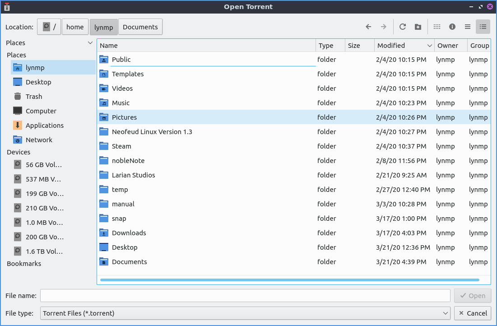
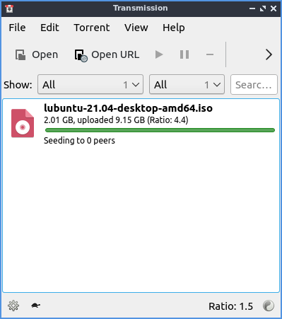
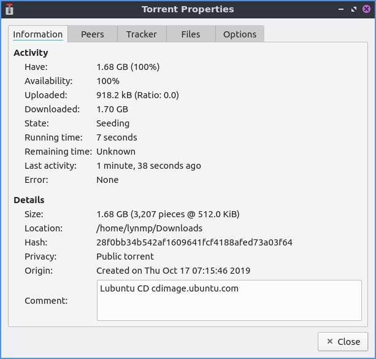
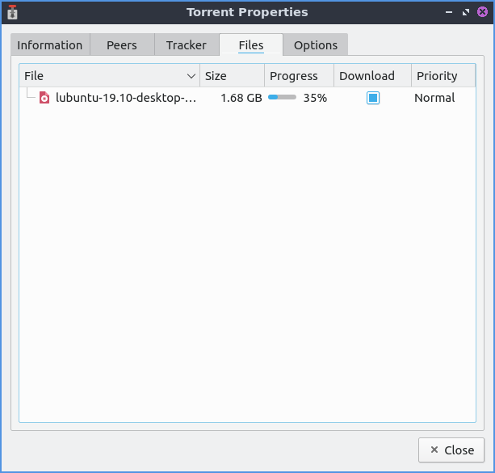
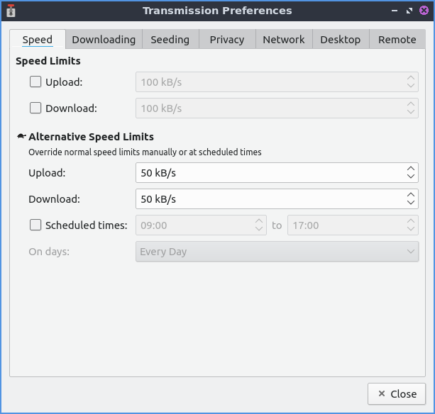
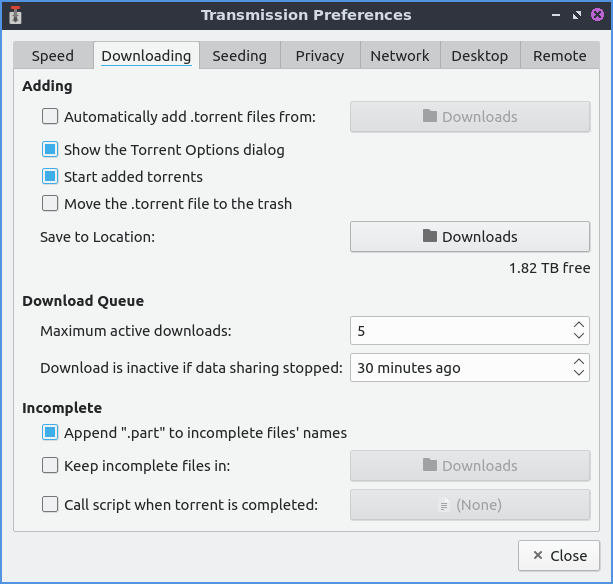
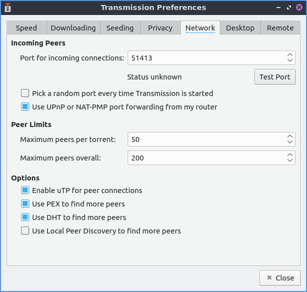
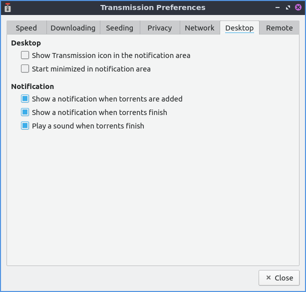

Chapter 2.1.2 Transmission¶
Transmission is Denios-OS’s default bit-torrent client.
Screenshots¶
 Usage¶
To open a torrent file press the open or simply double clicking the torrent file from a web browser after opening it will start Transmission. The torrent file will start download and using your connection to upload to others in a so called peer to peer network. At the bottom there is a downward pointing arrow to show how fast you are downloading. The up arrow shows how fast you are seeding or uploading the file to other people downloading that file. To open a torrent URL or press Control+U. Once you have this you will input the URL in the Source area. To choose where to save the torrent change Destination folder button. To actually start downloading press the Open button.
While you download your file a progress bar with will show your download for each file once you have it entirely you have see how many people you are seeding to each person and how fast you are uploading to that person.
The button with two || circled is a pause button that can pause all downloads and uploads or . To start downloading and uploading again to press a button with a triangle to start uploading and downloading again or .
To remove a torrent from the list of torrent files right click on it or Delete and click remove. To delete the files and remove the torrent from the list right click or press Shift +Delete.
To filter which torrents are shown on your list use the Show drop down menu. To only show active torrents from the Show drop down select . To only show torrents that are downloading from the Show menu select . To only show seeding torrents from the Show drop down select . To only show Paused torrents from the Show drop down select . To show only Finished torrents from the Show menu select . To only show torrents that are verifying from the Show drop down select . To only show torrents that are in an error state from the Show menu select . To go back to showing all torrents from the Show menu select .
To pause a particular torrent left click on the torrent press Control +P or . To start the torrent again press Control + S or . To move a torrent to move where your torrent is. To verify your local data press :kbd:` Control + V` or :menuselection:` Torrent –> Verify Local Data`.
If you want have a move compact view or press Alt + C. To switch back out from compact view press the same thing again.
To sort your torrents by activity . To sort your torrents by age . To sort your torrents by name . To sort your torrents by Progress . To sort your torrents by Queue . To sort your torrents by ratio uploaded to downloaded . To sort your torrents by size . To sort your torrents by State . To sort your torrents by time to finish downloading . To reverse the sort order .
To move a torrent down on where it appears on the screen and the queue or Control+down. To move a torrent up in the queue or press Control+ up arrow. To Move a torrent file to the top . To move a torrent file to the bottom .
If you do not want to prioritize the speed of your torrents press the button on the bottom of transmission that looks like a turtle. To change the ratio view on the bottom to your total changes . To view your upload/download ratio in the current session . To view your transfer from the current session only .
To open the file manager in the folder of your torrent press Control+E or .
To view statistics on how much Transmission has downloaded .
Torrent Properties¶
To bring a up a properties dialog window press Alt +Enter or . To show how much of the file you have on that torrent is under the Have row which shows how much of the file is on your disk and the percentage of the file. The Uploaded row shows how much of the torrent you have uploaded to other peers. The Downloaded row shows how much you have downloaded on your computer. The State row shows what the torrent is currently doing. The Remaining time row shows how long it will take for the torrent to finish downloading. The Size row shows how much space the torrent takes when downloaded. The Location row shows you where the file is saved on your system. The Origin row shows when you first downloaded this torrent.
The Peers tab shows you what other peers that also have the torrent open. To see how much data you are getting from a particular peer see the Up column. To add your column showing how much data you are downloading from a peer read the Down column. To see the address of your peers and read the column. To see what client other peers are using the Client column. The Tracker tab shows information of where the torrent is being tracked.
The Files tab shows what files this torrent has downloaded. To see the name of the file is in the File column. To see the size of the file look in the Size column. To toggle downloading a file check/uncheck the checkbox for that file in the Download column. To see how much of your file is downloaded as a percentage in the Progress column. To see the priority of the torrent see the Priority column.
To change options for a torrent file use the Options tab. To have the torrent not effected by global torrent speed uncheck the Honor global limits checkbox. To limit how much of your internet a torrent will use of your download on the internet check the Limit Download speed checkbox and set the cop for how much it downloads. To limit how much upload your torrent uses check the Limit upload speed and set the limit. To change how much of a priority the torrent is change the Torrent priority menu. To set limits on how much the torrent seeds use Ratio and Idle menus. To change the maximum number of other people this torrent will peer with change the Maximum peers field.
Version¶
Denios-OS ships with version 3.00 of Transmission.
How to Launch¶
To launch Transmission go to menu or run
transmission-qt
from the terminal. The icon looks like a silver colored gear selection lever in a car.
Customizing¶
To open your preferences for Transmission . To manage how fast things download or upload use the Speed tab. To limit upload speed check the Upload checkbox and select the limit of upload speed you want. To limit download speed check the Download checkbox and select the limit of download speed you want. To change the slower speed limits with the turtle button for uploading change the Upload field. To change the slower download speed change the Download field. To schedule a time to throttle your torrents check the Scheduled times: checkbox and to the right choose the time to start throttling your torrents and the time to stop throttling your torrents. The On days: drop down is where you select which days of the week to throttle torrenting.
The Downloading tab of your preferences has settings for downloading torrents. To automatically have transmission open the torrent files in a directory check the Automatically add .torrent files from checkbox and chose a path to have automatically added. To start the added torrents automatically check the Start added torrents checkbox. To choose where to save torrents is in the Save to Location: button to bring up a dialog to show where to save the torrent. To set a maximum number of torrents downloading at the same time change the Maximum active downloads field. To stop trying to download a file after no more file to download change the Download is inactive if data sharing stopped and choose how many minutes to choose if it is inactive. To add .part to the end of incomplete downloaded files check the Append “.part” to incomplete files’ names checkbox. To choose if you want a different file to choose the incomplete files check the Keep incomplete files in checkbox and bring a dialog to choose where to store the inocomplete files on the right.
To have the settings for uploading torrents or seeding them use the Seeding tab. To stop seeding after you have uploaded a certain size of the file check the Stop seeding at ratio: checkbox and then select the ratio to stop seeding. To stop seeding if the torrent has not been seeded recently check the Stop seeding if idle for: checkbox and then choose how long to select if the torrent is idle.
To have settings with privacy and encryption use the Privacy tab. To change whether to prefer encryption mode, allow encryption, or to require encryption use the Encryption mode drop down menu.
To change your settings on how Transmission interacts with the network use the Network tab. To choose the port for incoming connections to Transmission use the Port for incoming connections:. To see if that port is open press the Test Port button. To open a random port each time you open Transmission check the Pick a random port every time Transmission is started checkbox. To change the greatest number of peers you can have for each individual torrent change the Maximum peers per torrent field. To change the greatest number of peers you can have across all of you different torrents in the Maximum peers overall field.
To change things about your desktop interface use the Desktop tab of Transmission. To show an icon for Transmission in the system tray check the Show Transmission icon in the notification area checkbox. To start Transmission started in the notification area Start minimized in notification area checkbox. To toggle showing a notification when new torrents are added check/uncheck the Show a notification when torrents are added checkbox. To toggle showing a notification when torrents finish check/uncheck the Show a notification when torrents finish checkbox. To toggle playing a sound when a torrent finishes check/uncheck the Play a sound when torrents finish checkbox.
